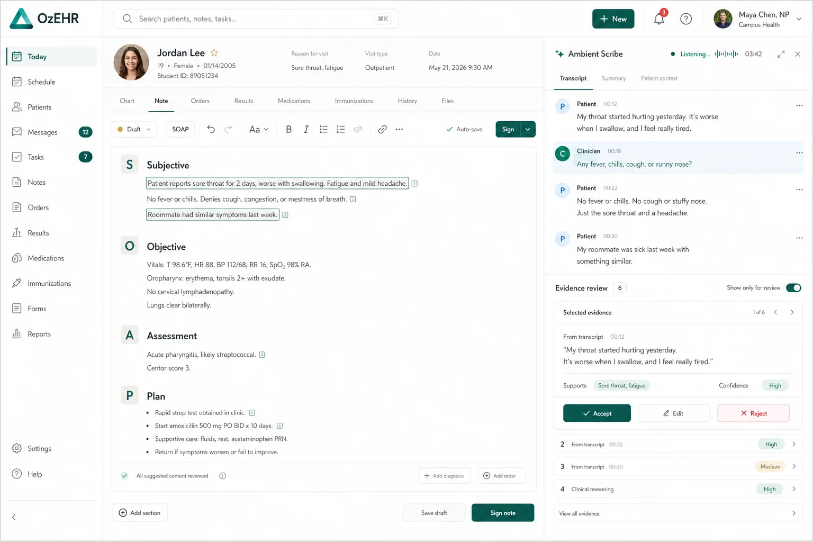
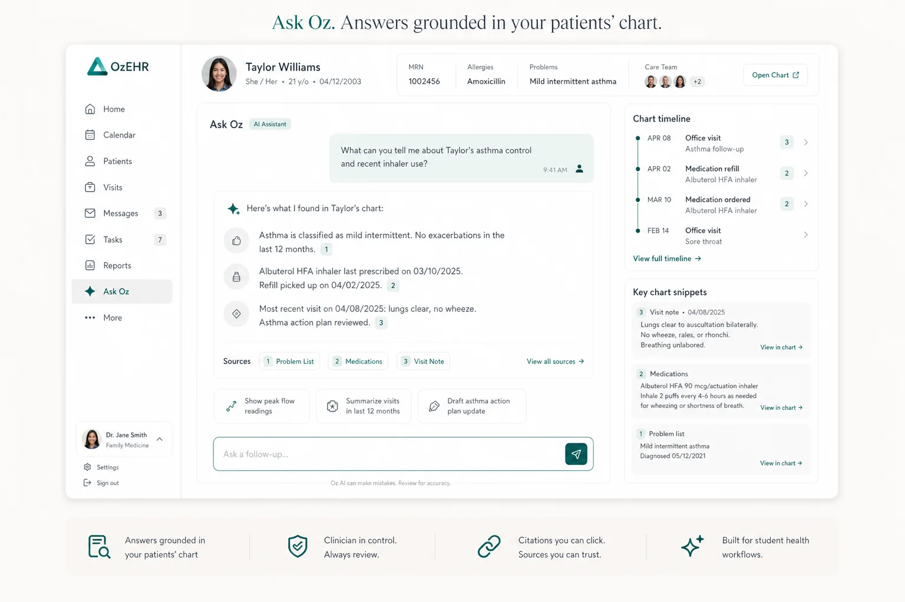
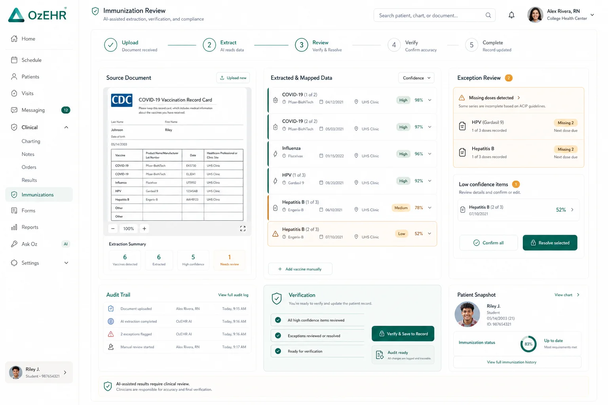
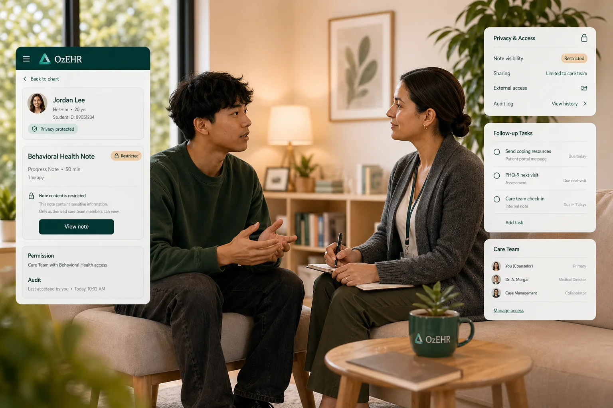

Use the chart as a working memory with citations and linked snippets attached to the answer.
Feature set
Built-in AI for the work campus health teams do every day.
ozehr is built for ambulatory outpatient student health operations, blending Ask Oz, Oz Scribe, immunization AI, student mobile access, and privacy-aware counseling workflows.
Chart-grounded AI
Evidence-linked review
Outpatient campus workflows

Capture visits, map evidence, and draft notes without removing clinician judgment.
Respect behavioral health boundaries while keeping tasks, follow-up, and chart visibility clear.
Make booking, intake, reminders, and messages simple enough that students actually finish them.
Ask Oz workflow
Get the answer, then see exactly what supports it.
Ask Oz is built to help clinicians move through a visit faster while keeping citation, context, and chart review visible instead of hidden behind generic AI text.
- Pull patient timeline, medications, note snippets, and visit context into one answer.
- Use follow-up prompts and suggested actions that stay connected to chart evidence.
- Keep the workflow suitable for campus clinicians, nursing staff, and operations leads.

Immunization review
Turn messy immunization records into a reviewable operational flow.
ozehr combines upload, extraction, exceptions, verification, and audit-ready signoff into one workflow built around campus requirements.
- Review extracted vaccine details with confidence indicators and clear exception states.
- Resolve missing-dose logic and manual review paths without losing the audit trail.
- Keep compliance work inside the product rather than spreading it across spreadsheets and inboxes.


Support mental health workflows without flattening confidentiality.
Behavioral health notes, access boundaries, and follow-up tasks stay visible to the right people and calm for the student experience.

Keep the front door simple from booking to follow-up.
Students can schedule, complete intake, upload records, and keep up with reminders without falling into disconnected portals.
Operational depth
The rest of the clinic still runs in one system.
Built-in AI supports the work, while the EHR still covers the day-to-day operating needs of student health centers.
Walk-ins, appointment types, follow-up tasks, and outpatient clinic flow that match campus operations.
Templates, prescribing, results, and documentation workflows that stay fast without becoming generic.
SSO, roles, auditability, and AI provenance for the teams who need to sign off on rollout.
See it with your workflows
We’ll tailor the walkthrough to your care model, review policy, and campus requirements.
Bring immunizations, counseling, primary care, telehealth, or student access scenarios and we’ll show how ozehr fits the work.